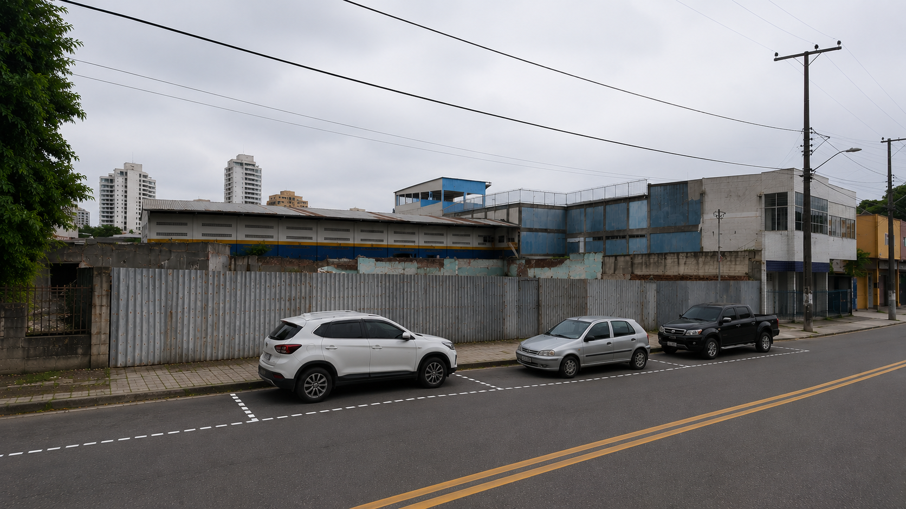
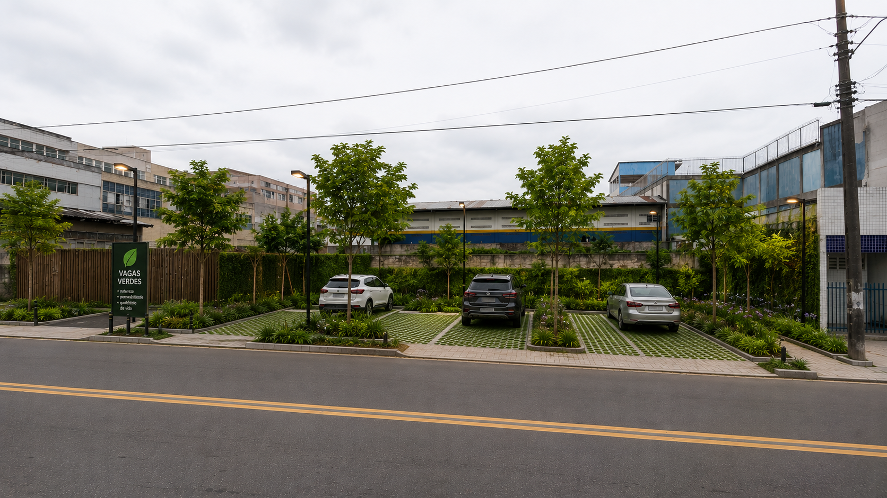

🌳 Implantação de Vagas Verdes
A proposta consiste em transformar áreas atualmente ocupadas por estacionamentos convencionais ou terrenos subutilizados em espaços arborizados com pavimento permeável, ampliando a cobertura vegetal, reduzindo a temperatura urbana e melhorando a drenagem das águas pluviais.

Situação atual da área.

Simulação da área após a implantação das vagas verdes.